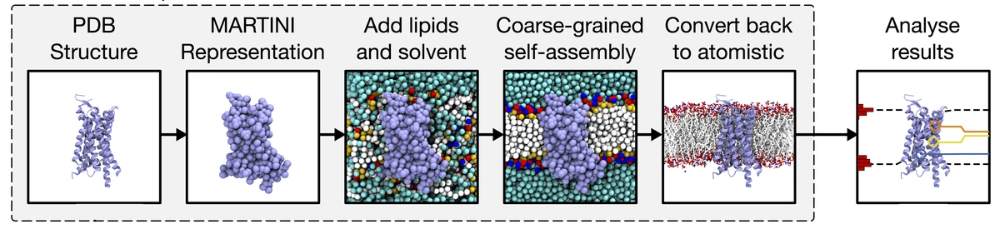

We use computer simulation and AI structure prediction to bring membrane proteins to life, with a particular focus on how bacteria build their cell envelope and resist antibiotics.
Membrane proteins are the cell’s gatekeepers, enzymes, channels and drug targets, yet they are among the hardest molecules to study experimentally. We combine AI-based structure prediction with multiscale molecular dynamics simulations to model membrane proteins and their complexes in realistic membranes, and to watch how they move and interact with lipids, drugs and each other. Much of this work is done together with experimental colleagues in structural biology, microbiology and chemistry.
The elongasome, the protein machinery that builds the bacterial cell wall
Our research
Membrane protein complexes
We predict how membrane proteins assemble using AI co-folding, then place and simulate the complexes in membranes with our own tools, MemPrO and CCD2MD.
How bacteria build and maintain their protective outer layers: lipopolysaccharide and phospholipid transport, outer-membrane assembly, peptidoglycan cell-wall synthesis and the mycobacterial cell wall.
How bacteria resist last-line antibiotics such as polymyxins, and helping to design new antimicrobials and peptide binders, including bicyclic peptides with Bicycle Therapeutics.
Simulations that reveal how lipids bind to and regulate membrane proteins, and how proteins shape the membranes around them, supported by open tools such as PyLipID and LipIDens.
We use multiscale molecular dynamics (MD) simulations to assemble a membrane protein into a membrane at the coarse-grained level, before careful assessment of its structure at atomic resolution. This workflow forms a springboard to studying the dynamics of experimentally solved and predicted structures through MD simulations.

We also maintain MemProtMD, a pipeline and database that inserts experimentally solved membrane protein structures into their native bilayer environment. It allows the stability, dynamics and lipid interactions of every structure to be analysed.